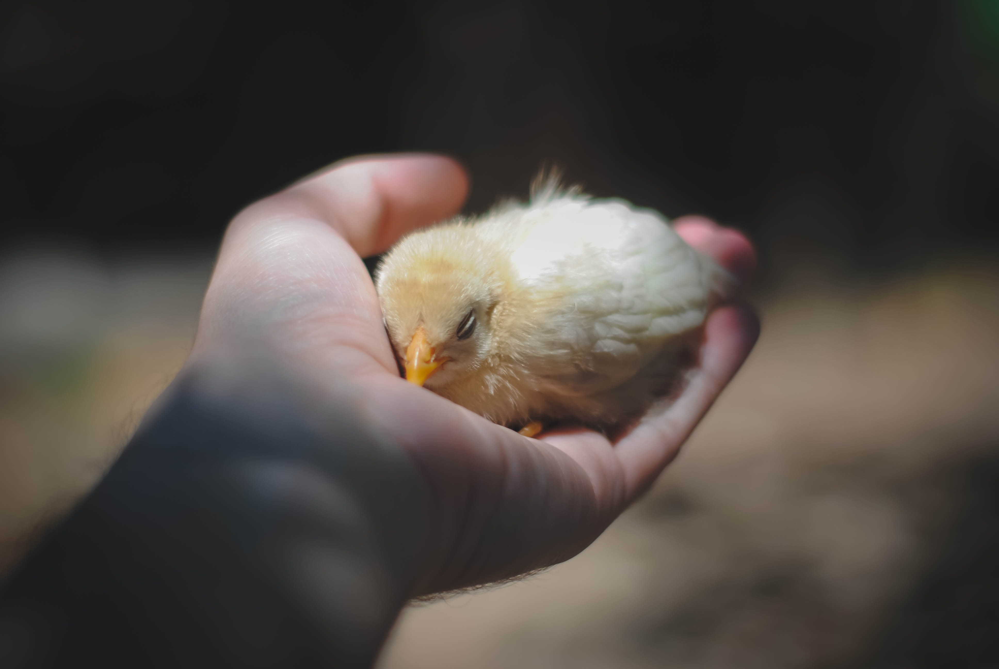

이 페이지는 첫 시작이니만큼 정말 많이 서투르다.
그리고 이제 첫 발을 내디딘만큼 배울 것도 참 많다.
갈 길이 정말 많은 만큼 설레이기도하다.
앞으로 나는 어떻게 얼마나 발전하게 될까?
...
지금 나의 모습은 막 대학에 입학했던 나의 모습과 닮아있다.
설레임 가득하고 서툴렀던 새내기 이지선!
아직까지도 첫 ot를 잊을 수 없다.
코딩 새내기 이지선. 그리고 대학 새내기 이지선.
...
어찌보면 대학 생활의 첫 시작은 초봄같기도 하다.
아직 완성되지 않고 이제 막 피어나는 그 느낌이 닮아있다.
정말이지 봄이라는 이미지는 몽글몽글 소중하다.
항상 설레오는 그런 느낌?
...
지금 시점에서 이지선에게 더 이상 이어질 대학 생활은 없다.
이젠 진짜 나의 길을 정해야 한다는 것.
그 길이 지금 내가 선택한 코딩이길 바란다.
과거의 새로웠던 시작을 추억하며 또 다른 새로운 시작을 만들어 낸다.
...